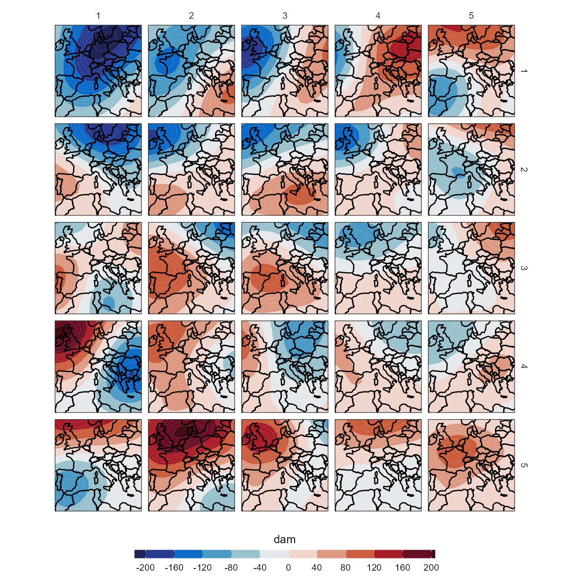

Self Organizing Maps (SOM) have gained popularity in the last decades in the field of synoptic climatology. SOMs are used to locate archetypal nodes that describe the multi-dimensional distribution function of a gridded variable (Hewitson and Crane, 2002). These nodes identify the primary features of the synoptic-scale circulation over a target region. The nodes represent a non-linear distribution of overlapping, non-discreet, circulation types. The circulation patterns are readily visualized in a 2-dimensional array (the SOM) that places similar types adjacent to one another and very different types far apart in the SOM space (Hewitson and Crane, 2002).
Here we provide a simple example in how to apply a SOM classification using 500 hPa. The process can be summarised in 3 steps: 1) Read/load the data (z500); 2) tidy the original data; 3) Apply the som_clas function:
library(synoptReg)
library(tidyverse)
data(z500)
# Tidying our atmospheric variables (500 hPa geopotential height).
z500_tidy <- tidy_nc(x = list(z500),name_vars = c("z500"))
# SOM classification (it may take a while)
set.seed(123)
som_cl <- som_clas(z500_tidy, xdim = 5,ydim = 5, iter = 2000)som_cl returns the same type of objects as the others classification functions (synoptclas or lamb_clas). In this particular case, the function also returns an object called som_info which provides all the information resulting from the application of this method. For example, As the SOM training iterations progress, the distance from each node’s weights to the samples represented by that node is reduced. Ideally, this distance should reach a minimum plateau. This plot option shows the progress over time. If the curve is continually decreasing, more iterations are required:
plot(som_cl$som_info,type = "changes")Plot the synoptic maps is quite easy using ggplot2:
library(metR)
library(rnaturalearth)
borders <- rnaturalearth::ne_countries(continent = c("europe","africa","asia"),
scale = 110, returnclass = "sf")
library(cptcity)
ggplot()+
geom_contour_fill(filter(som_cl$grid_clas, var == "z500"),
mapping = aes(lon,lat,z = mean_WT_anom_value),binwidth = 10)+
geom_sf(data = borders, fill = "transparent", color = "black")+
guides(fill = guide_colourbar(barwidth = 18, barheight = 0.5,
title.position = "top",title.hjust = 0.5))+
facet_grid(xdim~ydim) +
scale_fill_stepsn(colours = cpt(pal = "cmocean_balance",100),name = "dam",
breaks = seq(-400,400,40)) +
scale_x_continuous(limits = c(min(som_cl$grid_clas$lon),
max(som_cl$grid_clas$lon)),
expand = c(0,0))+
scale_y_continuous(limits = c(min(som_cl$grid_clas$lat),
max(som_cl$grid_clas$lat)),
expand = c(0,0))+
theme_bw() +
theme(
panel.grid.major = element_blank(),
panel.grid.minor = element_blank(),
panel.background = element_blank(),
text = element_text(size = 10),
strip.background = element_rect(fill = "transparent", color = NA),
axis.title = element_blank(),
axis.text = element_blank(),
axis.ticks = element_blank(),
legend.position = "bottom")
Sheridan, S.C.; Lee, C.C. The self-organizing map in synoptic climatological research. 2011, doi:10.1177/0309133310397582.
Hewitson, B.; Crane, R. Self-organizing maps: applications to synoptic climatology. Clim. Res. 2002, 22, 13–26, doi:10.3354/cr022013.